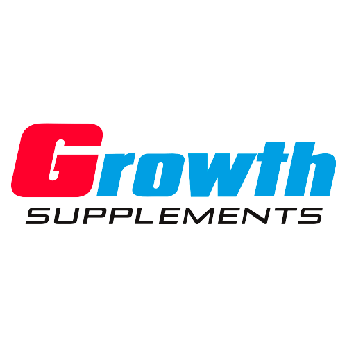
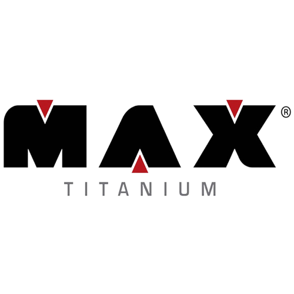
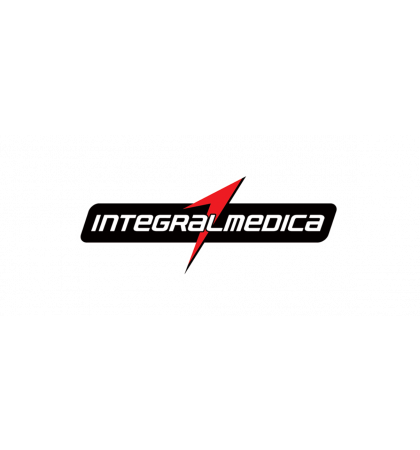
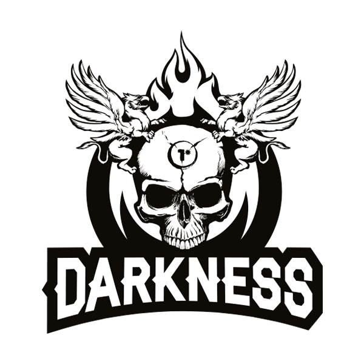
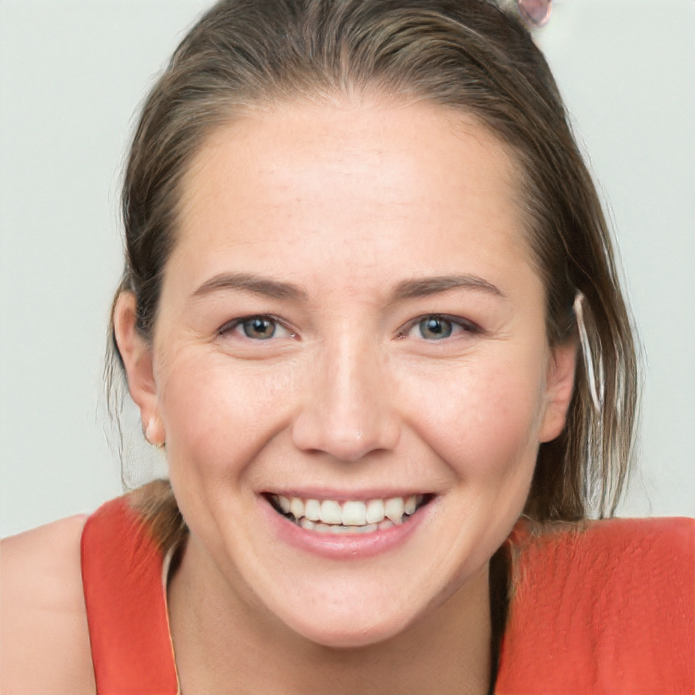
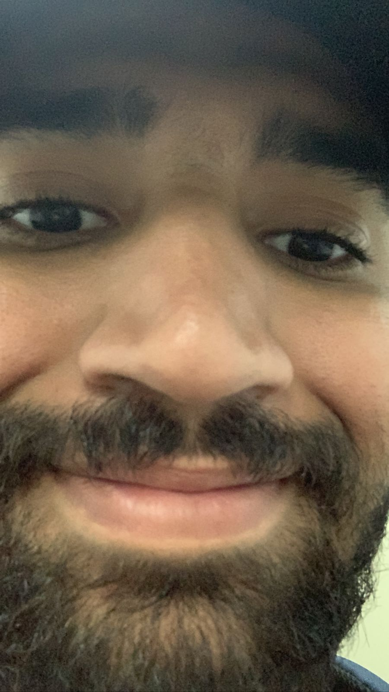
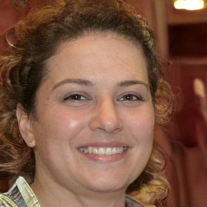
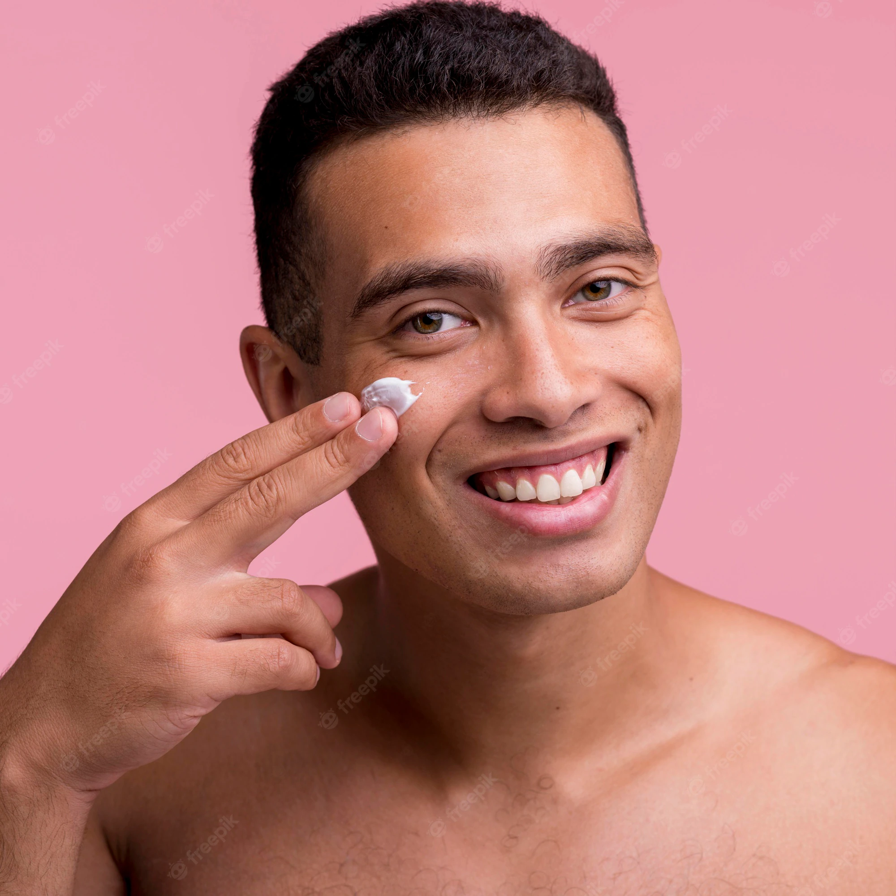

<!DOCTYPE html>
<html lang="pt-br">

</html>

<head>
    <meta charset="UTF-8">
    <link rel="preconnect" href="https://fonts.googleapis.com">
    <script src="https://kit.fontawesome.com/3bb13eb98b.js" crossorigin="anonymous"></script>
    <link href="https://fonts.googleapis.com/css2?family=Poppins:ital,wght@1,200&display=swap" rel="stylesheet">
    <link rel="stylesheet" href="style.css">
    <title>EuroTreino</title>
</head>

<body>
    <header>
        <div class="center">
            <div class="logo">
                
            </div>
            <!--logo-->
            <div class="menu">
                <a href="./cards.html">
                    Home
                </a>
                <a href="#sobre">
                    Sobre
                </a>
                <a href="../login.html">
                    Serviços
                </a>
                <a href="#contato">
                    Contato
                </a>
                <a class="btn-menu" href="../login.html">
                    Acessar
                </a>
            </div>
            <!--center-->
            <div class="menu-mobile">
                <i class="fas fa-bars menu-mobile-icon"></i>
                <div class="menu-items">
                    <a href="./cards.html">Home</a>
                    <a href="#sobre">Sobre</a>
                    <a href="../login.html">Serviços</a>
                    <a href="#contato">Contato</a>
                </div>
            </div>
        </div>
        <!--center-->
    </header>

    <section class="main">
        <div class="center">
            <div class="main__cta">
                <h2>Uma pagina sobre musculação</h2>
                <p>Alcance seus objetivos</p>
                <a href="../login.html"><button>Acessar</button>
                </div></a>
            <!--main-cta-->
            <div class="diferenciais">
                <div class="diferencial-single">
                    <i class="fa-solid fa-dumbbell"></i>
                    <a href="../Pagina Treinos/index.html"><h2>Treinos</h2></a>
                    <p>Dicas de Treinos</p>
                </div>
                <!--diferencial-single-->

                <div class="diferencial-single">
                    <i class="fa-solid fa-bottle-water"></i>
                    <a href="../Pagina Suplementos/index.html"><h2>Suplementos</h2></a>
                    <p>Melhores suplementos para se ingerir</p>
                </div>
                <!--diferencial-single-->

                <div class="diferencial-single">
                    <i class="fa-solid fa-capsules"></i>
                    <a href="../Pagina Hormonios/index.html"><h2>Hormonios</h2></a>
                    <p>Entenda um pouco mais sobre Hormonios</p>
                </div>
                <!--diferencial-single-->

                <div class="diferencial-single">
                    <i class="fa-solid fa-utensils"></i>
                    <a href="../Pagina Dieta/index.html"><h2>Dieta</h2></a>
                    <p>Veja qual dieta se encaixa melhor para você</p>
                </div>
                <!--diferencial-single-->
            </div>
            <!--diferenciais-->
        </div>
        <!--center-->
    </section>
    <!--main-->


    <section id="sobre" class="sobre">
        <div class="center">
            <div class="chamada-sobre">
                <h2>Sobre o EuroTreino</h2>
                <p>A EuroTreino foi fundada em 2021 com o objetivo de fornecer informações confiáveis e atualizadas
                    sobre musculação, treinos e outras áreas relacionadas</p>
            </div>
            <!--chamada-sobre-->
            <div class="conteudo-sobre">
                <p>Nossos textos e videos são elaborados com muito cuidado, usando as fotntes científicas mais recentes
                    nunca esquecendo de implementar, também, a experiência prática <br />
                <div><i class="fas fa-check-double"></i><span> Acreditamos cegamente que musculação é uma área onde a
                        ciência é importante, mas junto da práica</span></div>
                <div><i class="fas fa-check-double"></i><span> Nossos redatores contam com o conhecimento teórico como
                        vasta experiência prática</span></div>
                <div><i class="fas fa-check-double"></i><span> Nenhum texto vai ao ar sem que o mesmo seja revisado
                        cientificamente para que cada afirmação possa ser embasada</span></div>
                </p>
                <p>Tudo isso para que você, leitor, possa aprender algo novo, com confiança, e com cada texto possa
                    melhorar sua vida e treino em algum aspecto</p>
            </div>
            <!--conteudo-sobre-->
        </div>
        <!--center-->
    </section>
    <!--sobre-->

    <section class="conquistas">
        <div class="center">
            <div class="conquista-single">
                <h2>10 Mil</h2>
                <p>Assinantes</p>
            </div>
            <div class="conquista-single">
                <h2>100 Mil</h2>
                <p>Seguidores</p>
            </div>
            <div class="conquista-single">
                <h2>10 Mil</h2>
                <p>Usuarios Diários</p>
            </div>
        </div>
    </section>

    <section class="sobre-empreendedor">
        <div class="center">
            <video class="sobre-empreendedor-vid" src="./Videos/Como fazer whey protein caseiro.mp4" controls></video>
            <div class="sobre-empreendedor-content">
                <h2>Como fazer Whey caseiro</h2>
                <p>O Whey protein é um produto do processo de fabricação do queijo: ele é o líquido que sai da coalhada após a produção do queijo. Esse produto já é útil na forma pura, mas você pode torná-lo ainda mais benéfico com o processo de desidratação.</p>
                <p>Depois de desidratar o whey, o que sobra é o whey protein. Depois de triturá-lo, você pode usar o whey protein em milkshakes, vitaminas, cupcakes e biscoitos. </p>
            </div>
        </div>
        <!--center-->
    </section>
    <!--sobre-empreendedor-->


    <section class="conquistas">
        <div class="center">
            <div class="conquista-single" style="width:16%; margin: right 9%;">
                
            </div>
            <div class="conquista-single" style="width:16%; margin: right 9%;">
                
            </div>
            <div class="conquista-single" style="width:16%; margin: right 9%;">
                
            </div>
            <div class="conquista-single" style="width:16%; margin: right 9%;">
                
            </div>
        </div>
    </section>


    <section class="depoimentos">
        <div class="center">
            <div class="depoimentos-chamada">
                <h2>Depoimentos</h2>
                <p>Tens dúvidas ainda sobre nosso trabalho? Veja com calma os depoimentos e casos de sucesso abaixo e tire suas próprias conclusões.</p>
            </div>

            <div class="carrousel">

                <div class="carrousel-single">
                    <div class="carrousel-single-box">
                        <p><i class="fa-solid fa-quote-left"></i>’Nunca tinha feito atividade física e estava à procura de algo que me trouxesse bem-estar. Estou muito feliz com os exercícios e dicas da EuroTreino. Aos poucos passei a me sentir muito bem, mais disposta e percebi que fui perdendo medidas, nem imaginava o quanto mudaria minha vida! Obrigada a toda equipe do Eurotreino.<i
                                class="fa-solid fa-quote-right"></i></p>
                    </div>
                    
                    <p>Larissa albuquerque</p>
                    <span>23 Anos</span>
                </div>
                <div class="carrousel-single">
                    <div class="carrousel-single-box">
                        <p><i class="fa-solid fa-quote-left"></i> ’Excelente sistema. Profissionais muito atenciosos e preocupados com as necessidades que apresentei. Eu achei super fácil utilizar a Eurotreino, porque os conteúdos apresentados são excelentes para ensinar como fazer cada exercício corretamente. To gostando muito do atendimento e da qualidade dos exercícios indicados que me permite ter resultados melhores do que treinos que pedia para monitores na academia fazer. As dicas de treinos e dietas me fez chegar ao resultado que tanto esperava.<i
                                class="fa-solid fa-quote-right"></i></p>
                    </div>
                    
                    <p>Kitlys da silva</p>
                    <span>21 Anos</span>
                </div>
                <div class="carrousel-single">
                    <div class="carrousel-single-box">
                        <p><i class="fa-solid fa-quote-left"></i> Faço musculação para fortalecer os músculos, uma necessidade em decorrência de lesão nos joelhos e problemas de coluna. Por essa razão foi tão necessário um atendimento personalizado, encontrei a Eurotreino que com total incentivo os resultados têm aparecido diariamente pois não tenho dores na coluna e consegui voltar a jogar vôlei, algo super gratificante para mim.<i
                                class="fa-solid fa-quote-right"></i></p>
                    </div>
                    
                    <p>Silmara Souza</p>
                    <span>33 Anos</span>
                </div>
                <div class="carrousel-single">
                    <div class="carrousel-single-box">
                        <p> <i class="fa-solid fa-quote-left"></i>O meu caso é um pouco diferente da maioria dos alunos, sempre me considerei apto a fazer academia sem auxílio de qualquer orientador, porém depois de anos comecei a notar que não havia resultados, o que me levava a constatar que tudo estava errado. Foi quando descobri a Eurotreino. Hoje estou muito satisfeito, músculos que estavam deitados eternamente em berço esplêndido, hoje estão sendo descobertos, ou seja, o resultado é fantástico. <i
                     class="fa-solid fa-quote-right"></i></p>
                    </div>
                    
                    <p>Jorlan Guedes</p>
                    <span>25 Anos</span>
                </div>

            </div>


        </div>
    </section>

    <section id="contato" class="contato">
        <div class="contato-single">
            <h1>Contatos:</h1>
            <br>
            <h2>Telefone:</h2>
            <p>40028922</p>
            <br>
            <h2>E-mail:</h2>
            <p>eurotreino@gmail.com</p>

        </div>

    </section>


    <script src="https://kit.fontawesome.com/16544f2866.js" crossorigin="anonymous"></script>
    <script>

        var el = document.querySelector('.menu-mobile-icon');

        el.addEventListener('click', () => {
            //Queremos mostrar o menu.
            var menuItems = document.querySelector('.menu-items');
            if (menuItems.classList.contains('show')) {
                menuItems.classList.add('hide');
                menuItems.classList.remove('show');
            } else {
                menuItems.classList.add('show');
                menuItems.classList.remove('hide');
            }
        });


    </script>
</body>

</html>